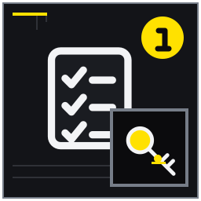

契約書から退去予告期限を拾う
予告期間、方法、到達先、違約条項を確認する。
MITSUKE RENT GUIDE 10
退去日から逆算し、契約予告、記録、庭、粗大ごみ、公共料金、立会い、精算を証拠と期限で管理する記事。
退去と精算では、資料が全部そろうのを待つより、確認済み・未確認・専門家へ聞く事項を分けるほうが実務は進みます。この記事は見付の戸建て賃貸から退去予定で、集合住宅より多い屋外・設備・鍵・ごみの手続を整理したい入居者に向け、14の論点を現地確認と相談準備の順に整理しました。退去日から逆算し、契約予告、記録、庭、粗大ごみ、公共料金、立会い、精算を証拠と期限で管理する記事。 結論を保証するものではなく、対象物件と契約条件に合わせて確認先を選ぶためのガイドです。
想定している検索時の疑問は、「戸建て賃貸 退去」「賃貸 原状回復 庭」「磐田市 粗大ごみ」で退去前後の手順と費用確認を知りたい。 以下では広告上の一言で判断せず、記録、比較、相談境界、次の行動を章ごとに示します。
退去準備は、解約通知を出す日から始まります。契約書で予告期間、通知方法、到達先、違約条項を確認し、退去日、引越日、清掃日、立会日、鍵返却日を別々に置きます。契約終了後も自由に入室できると思い込まず、鍵を持てる期間と電気・水道を使う最終日を管理窓口と合意してください。変更が出た場合に連絡する相手も工程表へ記します。
家財処分は、持って行く物、譲る物、家庭ごみ、粗大ごみ、家電リサイクルへ分類します。物置や庭の品も忘れず、所有者が分からない物は勝手に処分しません。粗大ごみの予約枠や家電の取外し工事は直前では希望日に合わないことがあるため、大型品から先に処分日、搬出者、費用を決めます。磐田市の最新分別案内で対象と方法を確認します。
原状回復の確認には、入居時写真、途中の修繕履歴、退去時写真を場所別に並べます。写真は負担割合を自動的に決めませんが、いつ、どこが、どの状態だったかを共同確認する材料になります。清掃で改善する汚れと、破損や不具合として報告する箇所を分け、自己流の補修で状態を悪化させないでください。清掃前後は同じ角度で撮影します。
庭、物置、外構は室内より後回しになりやすい箇所です。借主が持ち込んだ鉢や散水器具、貸主の庭石や保管品、契約対象外の部分を配置図と写真で分けます。草木の伐採や設備撤去を「元に戻すこと」と自己判断せず、管理側へ写真を送り指示を得ます。DIYや取付け物も承認メールを探し、外すか残すかを作業前に確認します。
ライフラインは引越日に一斉停止するとは限りません。清掃に使う照明と水、ガス閉栓の立会い、通信機器の返却、最終検針を考え、最後に使う日時から停止日を決めます。郵便転送、住民異動、勤務先、学校、保険等は家族別に担当と期限を付けます。受付番号、最終請求先、新住所を一つの表で管理すると連絡漏れを減らせます。
立会いでは傷、設備、鍵、庭、残置物を順に見て、その場で判断できない項目は保留と記します。精算明細を受け取ったら、対象箇所、理由、数量、単価、負担、経年の考慮を項目別に読み、疑問をまとめて一括ではなく番号ごとに照会します。鍵の受領記録、最終写真、確認票、精算書を保存し、精算完了前に連絡先を途絶えさせないでください。
工程表は退去日から逆算し、解約通知、大型品処分、引越見積、各種変更、清掃、立会いを週単位で配置します。行政や収集の受付日、家族の仕事、学校行事も重ね、動かせない期限を先に固定します。担当者と完了条件を一項目ずつ記せば、「誰かがすると思っていた」という漏れを減らせます。
物を減らす際は、貸主所有物、借主所有物、所有者不明を最初に分けます。備付け照明、物置の棚、庭の石などは自分が購入した記憶だけで判断せず、設備表、入居時写真、管理窓口の回答を確認します。処分してよいか不明な物には印を付け、搬出業者へ渡す前に書面で確認してください。
立会い前の最終確認では、全室を空にした後で収納、天袋、床下収納、物置、庭、郵便受けを順に見ます。鍵は玄関だけでなく勝手口、物置、郵便受けなど種類別に本数を数えます。最終写真は家具のない全景と、入居時に申告した箇所を同じ方向から撮り、撮影日時を保持します。
精算後も、税や契約上必要な期間を考えて資料の保管期限を決めます。契約書、入居時記録、修繕履歴、退去確認票、精算明細、鍵返却記録を索引化し、個人情報を安全に管理します。問い合わせがすべて終わった日を完了日として記録し、不要になった複製や端末内データは適切な方法で廃棄します。
退去後の精算や問い合わせに備え、新住所、電話、メールのうち確実に連絡を受けられる方法を管理窓口へ届けます。敷金等の返還先口座を伝える場合は、指定された安全な方法を使い、不要な個人情報を通常メールへ添付しません。最終請求や返金の予定日、明細の送付方法、追加確認が必要な場合の担当者を記録します。引越後は旧居へ戻って写真を撮り直せないため、立会い前に室内、設備、メーター、庭、物置、鍵の全項目を確認してください。すべての鍵を返した後は受領記録を保管し、無断で入室しません。精算明細への質問が終わり、返金または支払が確認でき、郵便や連絡先の変更も完了した日を退去手続の完了日として一覧へ記します。
退去工程の途中で予定が遅れたら、後の作業へ与える影響を確認します。粗大ごみが残れば清掃や立会いができず、鍵返却が遅れれば契約や費用へ影響する可能性があります。遅れを隠して当日に持ち込まず、管理窓口、引越業者、処分先へ早めに相談し、変更後の日程を書き直します。完了印は予約した時ではなく、搬出・返却・受付など相手側の確認が取れた時に付けてください。
引越業者や処分業者へ依頼する範囲と、賃貸契約上の退去義務は別に確認します。業者が運ばない物、危険物、物置内の残置物、取外し工事が必要な設備を事前に聞き、当日に置き去りが出ないようにします。建物や外構を傷つけた場合の連絡先も共有し、搬出後に玄関、廊下、階段、門扉を確認して新たな傷がないか記録します。
精算明細に疑問がある場合は、感情的に総額だけを争うのではなく、対象箇所と計算の根拠を一項目ずつ尋ねます。入居時記録、契約特約、修繕履歴、立会確認票の対応箇所を示し、回答期限と方法を確認してください。相談が必要なら、消費生活相談など適切な窓口へ契約一式と明細を持参できるよう、時系列と質問を整理します。
退去後に旧居宛ての郵便や連絡が届く可能性も考え、郵便転送の期間と管理窓口へ届けた新連絡先を確認します。保証会社、保険、通信、通販など住所情報を持つ契約も一覧から漏れていないか見直してください。転送不能の重要書類がある場合は発行元へ直接変更を届けます。最終の工程表には、鍵返却、精算、返金・支払、住所変更、資料保管の完了日を入れます。家族間で未完了がゼロであることを読み合わせ、退去ファイルの保管場所と廃棄予定を共有した時点で、一連の手続を閉じます。処分や返却の受領書は写真だけでなく原本の所在も記録し、問い合わせを受けた際に対象日と受付番号をすぐ示せるようにします。完了確認を家族二人で行うと、担当者本人が見落とした未処理にも気付きやすくなります。
予告期間、方法、到達先、違約条項を確認する。
持出、譲渡、可燃、不燃、粗大、家電を区別する。

棚、フック、アンテナ、照明等を原状回復確認へ回す。
傷、設備、鍵、庭、残置物を場所ごとに確認する。
確認の中心：予告期間、方法、到達先、違約条項を確認する。 契約書の解約条項から予告期間、通知方法、到達先、違約金の条件を抜き出します。「一か月前」と思い込まず、満了退去と中途解約で違いがないかも確認してください。
具体例：一か月前通知と思い込んでいたが契約文言を再確認する例を置く。 書面通知なら送付日だけでなく相手へ到達した日が扱いに影響するかを管理窓口へ尋ねます。
注意：口頭連絡だけで解約成立を決めつけない。
次の一歩：指定方法で通知し控えを保存する。 指定方法で通知し、受付日、担当者、控えを退去ファイルへ保存します。
確認の中心：荷出し、清掃、立会い、返却の時系列を作る。 退去日、荷物を出す引越日、清掃日、立会日、鍵返却日を別々にカレンダーへ置きます。契約終期後に入室できると思い込まず、水道・電気を使う清掃日も管理側と合意します。
具体例：引越翌日に清掃しその次の日に立会う案を組む。 引越翌日に清掃し翌々日に立会うなら、その期間の鍵保管と入室可否を確認します。
注意：契約終期後の入室可否を自己判断しない。
次の一歩：管理窓口と三日付を合意する。 各日付と担当者を一枚にまとめ、変更時は引越業者と管理窓口の双方へ連絡します。
確認の中心：開始時状態、途中修理、申告済み不具合を一つにする。 入居時写真、傷の申告書、途中の修繕メール、設備交換記録を部屋別に集めます。撮影日と位置が分かる資料を並べると、開始時から退去時までの変化を共同確認しやすくなります。
具体例：入居時の床傷と修理済み漏水記録を並べる。 床傷の入居時写真と、漏水修理の完了報告は別の履歴として場所番号で結びます。
注意：写真だけで負担割合を確定しない。
次の一歩：場所別フォルダを作る。 写真だけで負担を確定せず、立会い時に示せる場所別フォルダを作ります。
確認の中心：持出、譲渡、可燃、不燃、粗大、家電を区別する。 室内と物置の品を、持出し、譲渡、家庭ごみ、粗大ごみ、家電リサイクルへ分類します。大きい物から先に一覧化し、収集予約、運搬者、搬出経路、残す期限を決めてください。
具体例：物置の自転車と大型棚を早期に分類する。 物置の自転車と大型棚は通常ごみに混ぜず、所有者と処分方法を早めに確定します。
注意：無許可で集積所へ大量排出しない。
次の一歩：市の分別ガイドで処分日を予約する。 各品へ処分日と担当者を付け、無許可で集積所へ大量排出しません。
確認の中心：磐田市の申込方法、対象、手数、搬出条件を確認する。 粗大ごみは磐田市の最新案内で申込方法、対象品、手数料、搬出条件、予約可能日を確認します。引越直前は希望日に合わない可能性があるため、代替の適正処分方法も調べます。
具体例：引越直前に予約枠が合わないリスクを避ける。 予約枠が引越後になる事態を避けるため、退去一か月以上前に大型品と候補日を洗い出します。
注意：最新制度と対象品を市公式情報で確認する。
次の一歩：退去一か月以上前に候補日を調べる。 受付番号、料金、搬出場所を一覧へ記し、当日の運搬人員も確保します。
確認の中心：エアコン、テレビ、冷蔵庫等の処分方法を確認する。 エアコン、テレビ、冷蔵庫・冷凍庫、洗濯機・衣類乾燥機などは家電リサイクル対象か確認し、販売店引取り等の適正なルートを選びます。粗大ごみと同じ予定に入れません。
具体例：買替え店引取と指定引取場所の選択を比べる。 買替え店の引取りと指定引取場所を、費用、運搬、希望日で比較します。
注意：粗大ごみと同じ扱いにしない。
次の一歩：型番と購入店を調べる。 型番、メーカー、購入店を調べ、取外し工事が必要な機器は早めに予約します。
確認の中心：私物撤去、草、鉢、物置内、散水器具を確認する。 庭、物置、通路、外構を契約範囲図と照合し、借主の鉢や散水器具、貸主の庭石や保管品を分けます。草木の伐採や設備撤去は原状回復と思い込まず、事前に管理側へ確認します。
具体例：持ち込んだプランターと貸主の庭石を分ける。 持ち込んだプランターには印を付け、貸主所有物と混ざらないよう外構写真で確認します。
注意：樹木の伐採や設備撤去を無断で行わない。
次の一歩：外構写真を契約図と照合する。 撤去前後を同じ角度で撮り、庭管理の完了基準を立会日前に共有します。
確認の中心：棚、フック、アンテナ、照明等を原状回復確認へ回す。 壁棚、フック、照明、アンテナなど自分が取り付けた物を一覧にし、承認メールと設置前写真を探します。外すべきか残すべきか、補修方法を含め管理窓口の指示を得てください。
具体例：許可を得た壁棚の承認メールを探す。 許可済みの壁棚でも、承認条件に退去時撤去が含まれるかをメールで確認します。
注意：自分で補修して状態を悪化させない。
次の一歩：撤去前に管理窓口へ写真を送る。 自己流の穴埋めで状態を悪化させず、撤去前の写真を送って回答を保存します。
確認の中心：掃除で改善する箇所と修理が必要な箇所を整理する。 清掃で改善する汚れと、破損・不具合として報告する箇所を分けます。台所、浴室、窓、床を順に清掃し、前後を同じ角度で撮りますが、清掃だけで精算費用がなくなるとは断定しません。
具体例：油汚れ清掃と割れた建具を別記録する。 油汚れは清掃前後を記録し、割れた建具は無理に補修せず別項目として申告します。
注意：清掃すれば全費用がなくなるとは断定しない。
次の一歩：清掃前後を同じ角度で撮る。 清掃完了箇所と未対応の損傷を一覧にし、立会い時に共同確認します。
確認の中心：電気、水道、ガス、通信の立会いと最終利用を調整する。 電気、水道、ガス、通信の停止日は、荷出し、清掃、立会いで最後に使う日時から決めます。ガス閉栓の立会い、通信機器の返却、水道の最終検針など事業者別の手続きを確認します。
具体例：清掃日に水と電気を残す計画を立てる。 清掃日に照明と水を使うなら、引越日と同日に停止せず作業終了後へ設定します。
注意：凍結や安全確認をせず早期停止しない。
次の一歩：各受付番号を一覧にする。 各事業者の受付番号、停止日、立会時間、最終請求先を一覧へまとめます。
確認の中心：家族別手続と期限を一枚にする。 郵便転送、住民異動、運転免許、勤務先、学校、保険などを家族別に分け、期限と必要書類を整理します。行政や学校の手続は最新の公式案内を確認し、担当を一人へ集中させません。
具体例：転校手続と勤務先住所変更を担当分けする。 転校手続と勤務先住所変更を家族で分担し、完了日と受付先を同じ表へ記録します。
注意：行政手続の必要書類は最新公式情報を確認する。
次の一歩：完了日と受付先をチェックする。 郵便が届かない期間を避けるため、旧住所と新住所の連絡可能時期も確認します。
確認の中心：傷、設備、鍵、庭、残置物を場所ごとに確認する。 退去立会いでは室内、設備、鍵、庭、残置物を場所順に共同確認し、指摘内容と自分の認識を確認票へ記します。その場で原因や負担を判断できない項目は保留と明記します。
具体例：その場で判断できない項目を保留記載する。 傷の発生時期が不明なら、入居時写真と修繕履歴を示し、即時確定せず確認対象にします。
注意：納得できない内容へ急いで確定同意しない。
次の一歩：確認票の控えを受け取る。 確認票の控えと鍵受領記録を受け取り、納得できない内容へ急いで確定同意しません。
確認の中心：対象箇所、理由、数量、単価、負担、経年を確認する。 原状回復の精算明細は、対象箇所、作業理由、数量、単価、借主負担、経年の考慮を項目別に読みます。国土交通省のガイドラインは考え方の参考にし、個別費用を自動計算する道具にはしません。
具体例：壁一面と部分補修の範囲が明細にどう出るかを見る。 壁一面の張替えなら、損傷位置と施工範囲の関係が明細で分かるかを確認します。
注意：ガイドラインだけで個別費用を自動計算しない。
次の一歩：疑問は項目別に書面で照会する。 疑問は項目番号ごとに書面で照会し、回答と追加資料を精算書へひも付けます。
確認の中心：鍵返却、最終写真、精算、連絡先、郵便を完了記録にする。 鍵返却の受領記録、退去時の最終写真、立会確認票、精算書、転送先、連絡先を完了ファイルへまとめます。精算が終わる前に連絡先を閉じず、資料ごとに保管期限を決めてください。
具体例：鍵本数の受領記録と外観写真を保存する。 鍵の本数は受領書と照合し、室内・庭・外観の最終写真を撮影日時付きで保存します。
注意：精算前に連絡先を途絶えさせない。
次の一歩：保管期限を決めて一式を保存する。 未精算項目と次の連絡日を一覧に残し、完了後は個人情報を安全に保管・廃棄します。
退去と精算の準備状況を確認するため、完了・未完了だけでなく根拠資料の場所も記してください。
契約書の指定方法と到達先を確認し、送付・受付の記録を残す。 ライフライン停止日を住居日程に合わせるの確認結果を添えると、一般論と対象物件の事情を分けて相談できます。分からない欄を無理に埋める必要はありません。
契約上の管理分担、入居時状態、季節、具体的状況を管理窓口と確認する。 原状回復の精算明細を読むの確認結果を添えると、一般論と対象物件の事情を分けて相談できます。分からない欄を無理に埋める必要はありません。
原状回復ガイドライン、契約、損耗状態等で判断され、一律に断定しない。 退去日・引越日・鍵返却日を分けるの確認結果を添えると、一般論と対象物件の事情を分けて相談できます。分からない欄を無理に埋める必要はありません。
無断残置せず、磐田市の処分方法と管理窓口の指示に従う。 粗大ごみは受付と搬出日を先に確保するの確認結果を添えると、一般論と対象物件の事情を分けて相談できます。分からない欄を無理に埋める必要はありません。
対象、理由、数量、単価、契約条項を項目別に確認し、必要なら公的相談窓口や専門家へ相談する。 DIYや取り付け物を一覧にするの確認結果を添えると、一般論と対象物件の事情を分けて相談できます。分からない欄を無理に埋める必要はありません。
制度や手続は更新されるため、公開元の最新情報と対象範囲を確認してください。リンク先の説明は個別物件への判断を代替しません。
本記事は2026年8月時点の一般的な情報整理と相談準備を目的としています。対象物件の安全性、適法性、契約条件、税務上の取扱い、修繕の必要性を診断・保証するものではありません。法務は弁護士・司法書士、税務は税務署・税理士、建物の安全や工事は建築士・施工業者、行政制度は担当窓口へ個別に確認してください。富士ヶ丘サービス株式会社は宅地建物取引業者として、戸建て賃貸の現況整理、募集条件、管理方法、売却を含む選択肢の相談を承ります。